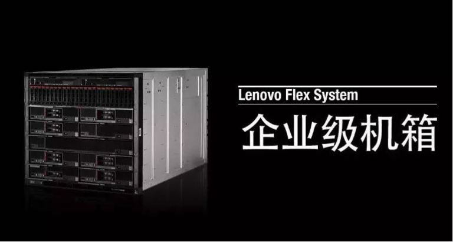
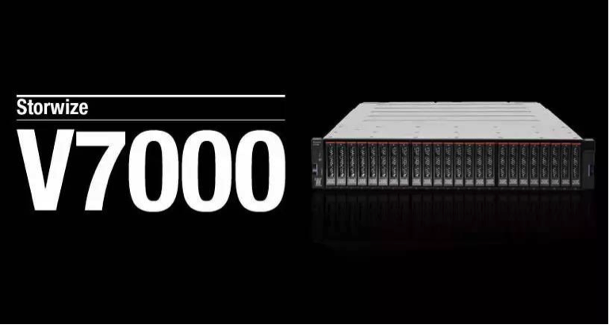

企业上云“恐高症”？怎么办？
对于企业上云，你是否也有着深深的顾忌？即使云服务的高灵活性和性价比，对你有着巨大的吸引力，也仍然难以让你放下陈旧的观念，去摆脱传统的存储模式。企业患了上云“恐高症”，该怎么办？现在，Altus IT也遇到这样的问题，不过这次，患了上云“恐高症”的是他们的客户。
潜力巨大的云服务市场但是，它患了“恐高症”
克罗地亚Altus IT是一家通过独立运营商数据中心，为客户提供IT基础架构服务的公司。而在克罗地亚，云服务领域几乎未被“开垦”，有着巨大的市场潜力。但是，Altus IT面临着一个巨大的难题：客户们患有云服务“恐高症”。
因此，使用开源云配置软件的Altus IT，急需寻求一个能够与环境无缝集成，同时兼具高性能和可靠性的行业标准平台，为客户持续提供安全且高性能的云服务，以证明自己在新兴市场中值得信赖，来吸引更多的潜在客户。而联想基于Flex System服务器、RackSwitch网络和Storwize存储的解决方案给他们带来了机会。

“对症下药”联想出手“治愈恐高”
联想的解决方案通过在较高层和分发层，分别部署不同性能的RackSwitch交换机，帮助Altus IT构建了具备高灵活性的网络基础架构。而针对客户担心的安全问题，解决方案通过在存储区域网络配置中，使用联想Storwize V7000系统整合现有基础架构中的各种存储，让用户可以快速访问虚拟化存储设备。而这种虚拟化环境有助于客户进行灾难恢复，确保了其业务的连续性。而数据中心上云后，客户不必再维护专用辅助数据中心，最高可节省75%的数据中心成本。

采用了联想解决方案后，Altus IT能够为客户提供从入门级云到高可用企业云解决方案的一系列云服务。这些云服务所具备的安全和高性能，帮助Altus IT打消了客户“恐高”顾忌，确立了其在克罗地亚云服务市场中的优势地位。
不止安全更着眼于未来
不仅如此，联想解决方案还拥有面向未来的坚实基础。Altus IT在现有开源平台上使用了KVM系统管理程序，并在一个全异构环境中运行多台虚拟机，使客户可以在不同系统上运行自己的应用程序。如，企业资源规划应用程序、企业在线交易处理数据库等核心应用，可在使用了KVM的高性能Flex System服务器上运行。而电子邮件和其它业务应用程序，在其它类型的虚拟化硬件上运行。这样一来，客户既拥有当前所需的性能，又拥有云平台未来灵活扩展的能力。
“联想Flex System是我们交付高性能云服务的首选，相关组件会与我们现有的基础架构轻松集成。 ”——Altus IT CEO Goran Đoreski 如是说